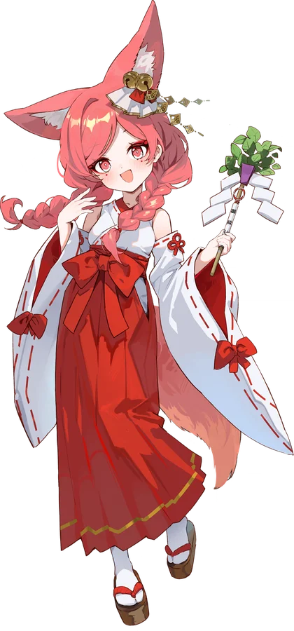
照 · 三神御主
“三神教”现任的教主。三神教作为联合城比较有影响力的组织，人员组成结构复杂。作为“教主”的照很少露面，但是作为一般人的照则是非常喜欢外出游玩。她本人也不拘泥非要穿着传统服饰以彰显自己的“教主”地位，相反她很喜欢穿一些符合她身型的衣服。
指定一个角色施加降神（照-降神），本轮自身增加降神（照-降神）目标的攻击力与防御力。降神（照-降神）持续1回合。
PVE指定一个角色施加降神（照-降神），本轮自身增加降神（照-降神）目标50%的攻击力与防御力。降神（照-降神）目标攻击后，照会消耗1层狐光（每层使自身追击攻击力+1）并进行追击，降神（照-降神）持续1回合。
使用主动技能时，夺取目标狐火（狐火）的星币。自身或拥有降神（照-降神）的目标使用费用2及以上的攻击牌时，自身获得1层狐火（狐火）。
PVE自身或拥有降神（照-降神）的目标使用费用2及以上的攻击牌时，自身获得1层狐光（每层使自身追击攻击力+1）。
【降神】增加的攻击力与防御力数值满足：<math>增加的攻击力或防御力=\left\lceil\frac{目标的攻击力或防御力}{2}\right\rceil</math> 【降神】目标攻击后，如果本次攻击未能击倒对方，则照会发动追击；反之，则不发动追击。当照追击时，其伤害由照当前的攻击力、【狐光】层数与对方当前的防御力决定，其计算公式为：<math>追击伤害=照的面板攻击力+【狐光】层数-对方当前的防御力</math>，照的追击伤害至少为1（不考虑技能和筹码减伤）。 追击伤害的来源为【降神】目标，因此击倒怪物后的星币归目标所有，也能触发目标的造成伤害相关效果。（如赛克斯的渊蚀印记）
基础资料
PVE 特性
- 达到1星时攻击力+1
- 初始星币+6
- 达到3星时攻击力+1、防御力+1、移动速度+1
默认
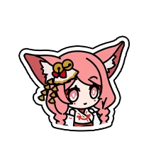
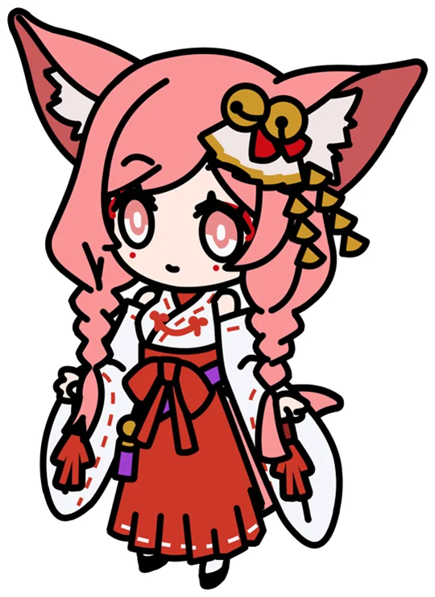
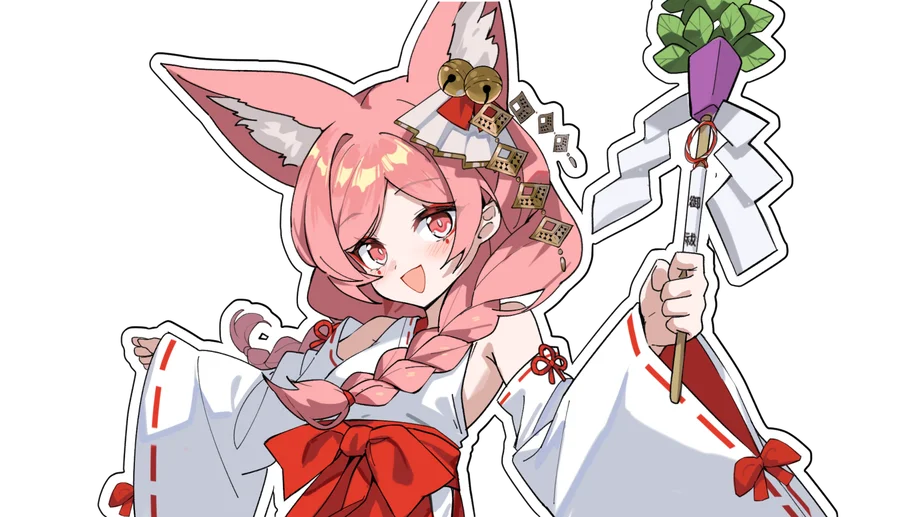
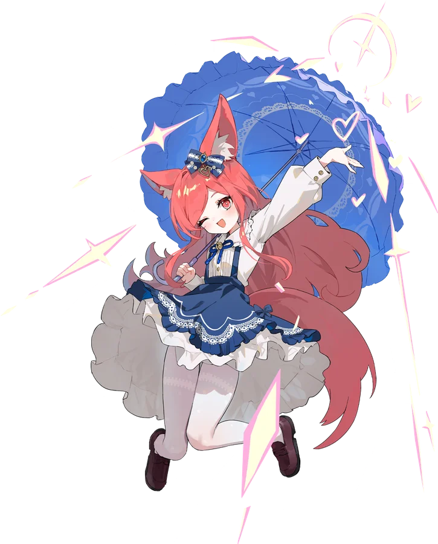
羁绊皮肤
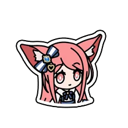
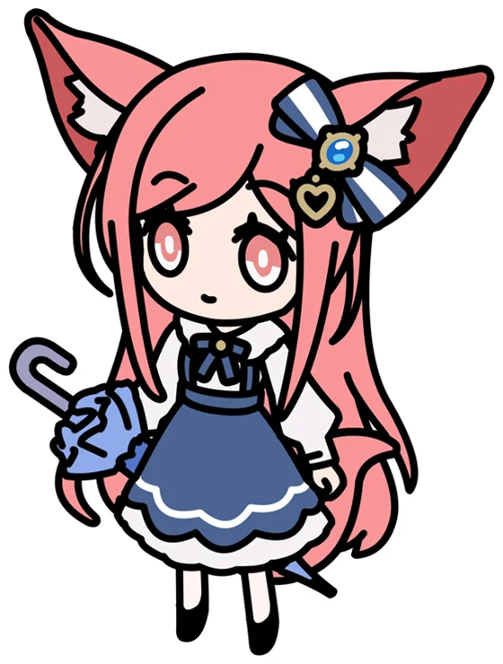
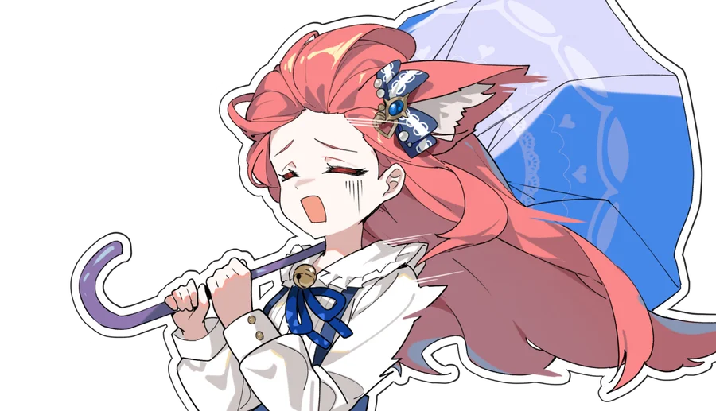
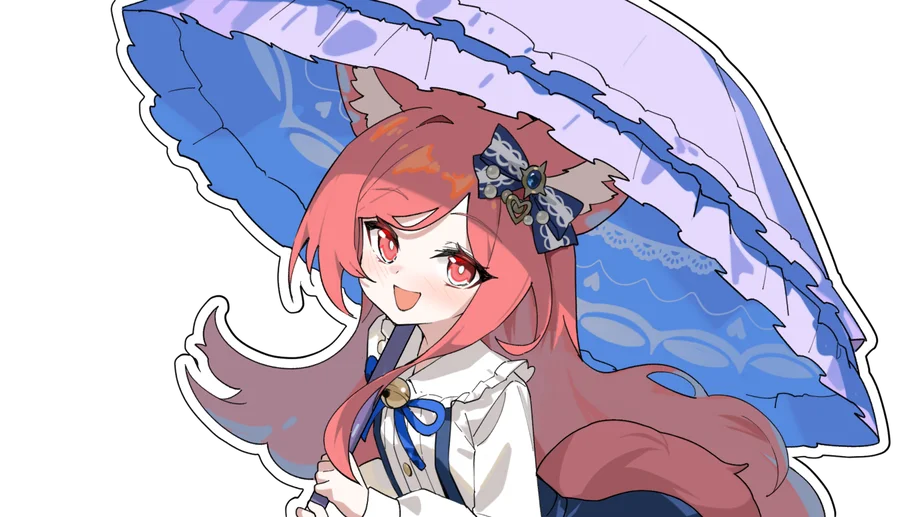
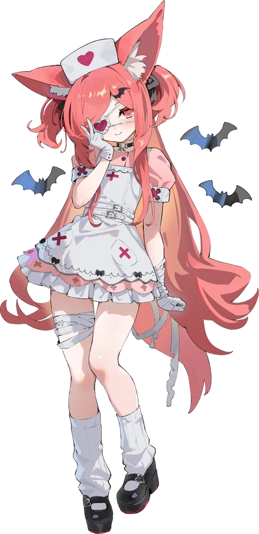
小护士
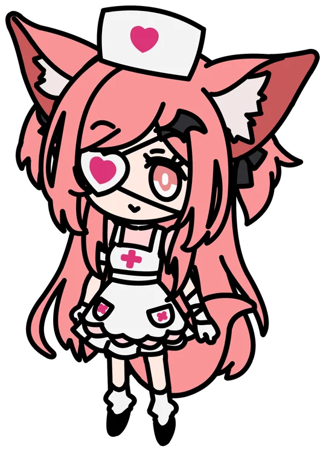
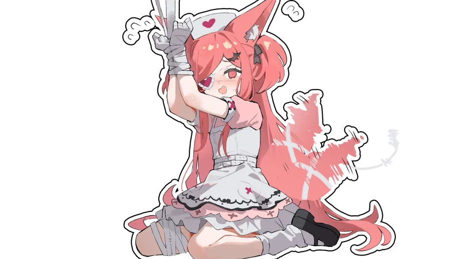
“御…御主大人…今天真的要穿这个出去吗？” 看着镜子里的御主，凛难免犯了嘀咕。 “唉，没事没事，你别害怕，跟在我后面就行了，今天你是姐姐哦！”照对着镜子摆了几个造型，嘿嘿一笑，感觉很是满意。 “但是我一个平时都不怎么出门的人，突然要陪你去参加这种活动，难免…” “那你帮我把美咲找回来，我就放你去干别的事情。” 凛无力地瘫坐在地上，眼泪快从眼眶里涌出来了。 今天是御魂庆典，联合城很多人都跑到街上玩起了角色扮演。照平时就很喜欢穿洋装，今天就更加不会放过这个机会了。但是原本作为随身护卫的美咲不知为何今天请假了，照临时起意，把休假中的凛拉回三神宫当护卫。 “那么，我可爱的凛姐姐~能陪我去参加今天的庆典吗？”身着小护士装扮的照突然转身，伏下了身子。 戴着单边眼罩的御主缓慢的爬到凛的身旁，现在只有一只眼睛直勾勾的盯着凛，加之妩媚的笑容和诡异的动作，使得凛越看越恐怖。 “御御…御主大人…噫！！！” 照爬到凛的耳边，然后轻声地说道：“今天就拜托你了~姐姐~” “好…好的....” 凛欲哭无泪。
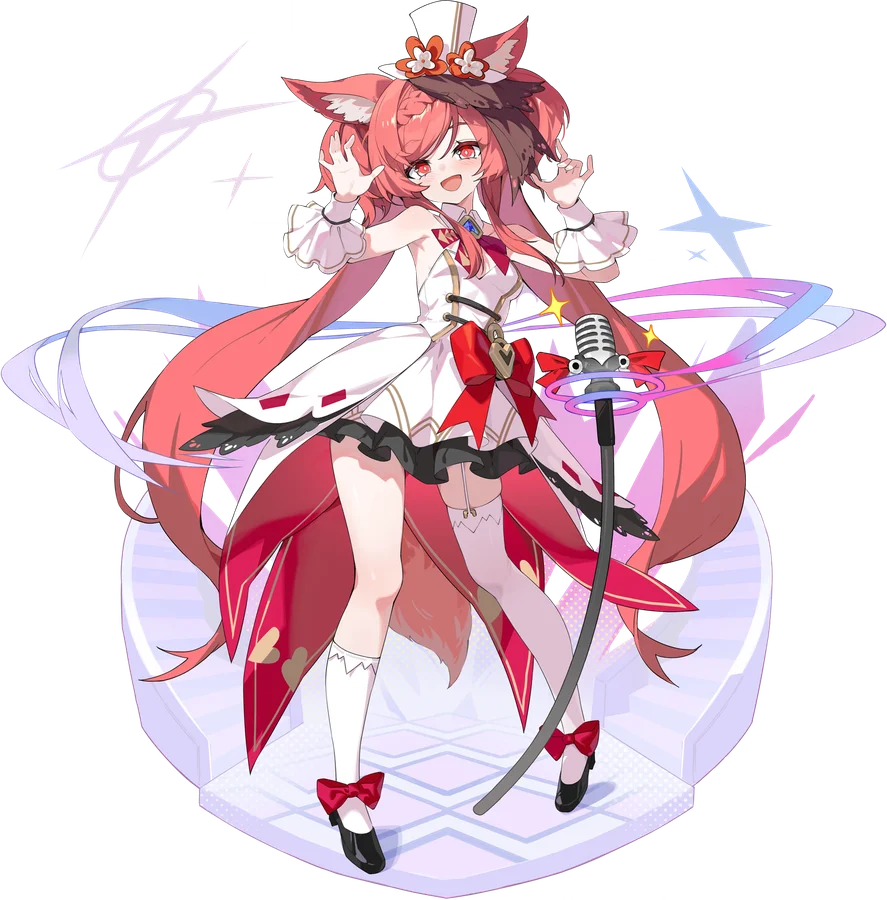
魔旅歌姬
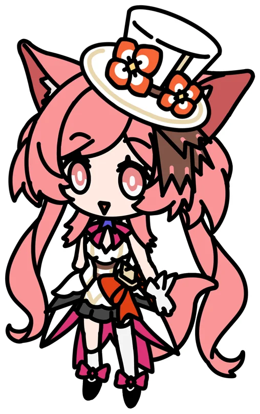
在恋的构想中，作为一个合格的魔术剧团，魔术表演只是基础，拥有更多元的表演形式才能更好地留住观众。 在构想中，让人气超高的照加入自己的小剧团再合适不过了。 照本身的天性让她在舞台上如鱼得水，她设计的各类动作和巧妙构思，必定会为现场观众带来意想不到的感官体验。更何况，谁也没见过这样厉害的人在台上唱唱跳跳的场景——新奇感和期待值绝对拉满。 “可是，这怎么可能？那位大人真的会接受我们的邀请吗？”米米在一旁看着演出服的照片问道。 恋一把夺过照片，轻轻拍了拍。“所以我才特意为她准备了这套衣服。按照她的性格，她一定会上当…一定会来的！” 恋充满信心。仿佛她已经看到了那个身材娇小的身影在舞台上大放异彩，用动听的歌声打动无数观众的场景。
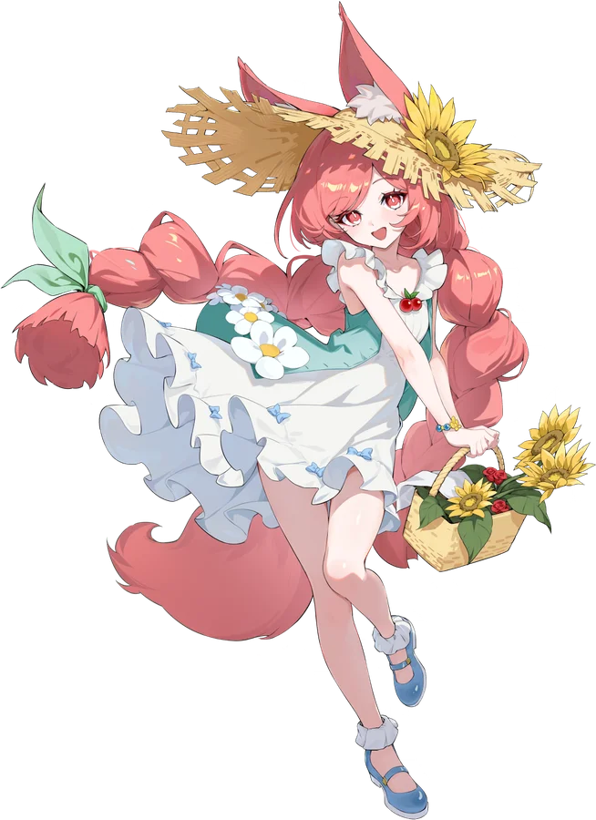
踏秋寻芳
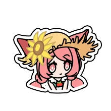
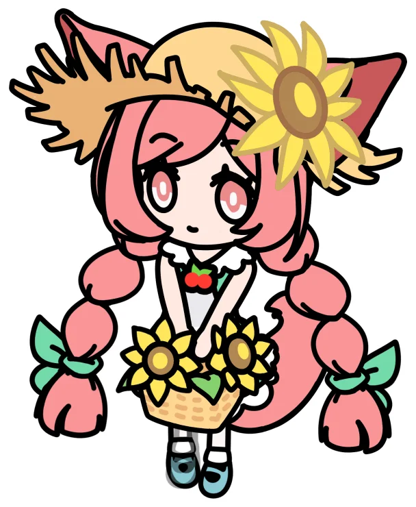
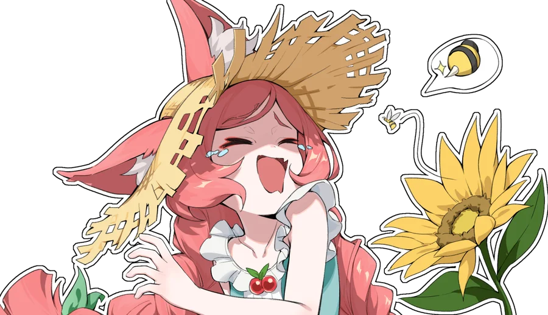
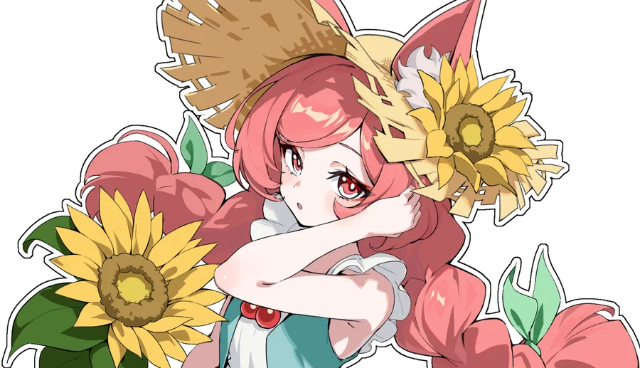
在这个被高楼大厦环绕的城市里，能有这么一块巨大的农田实属不易。 这里原本计划建造什么已不得而知，后来不知因何缘故搁置了，这片占地数十亩的空地便成了钢铁森林中的一片田园。 联合城政府每年都会组织市民投票选出要种植的作物，去年正巧轮到了向日葵，今年这里自然便化作了一片金黄的向日葵花海。 向来喜欢热闹的照，因为工作缘故被美咲牢牢地按在三神教的神社里抽不开身，只能趁闲暇来到这片附近的农田，感受属于今年秋天的美景。 她头上别着一朵小向日葵，身穿一袭素色白裙，在明媚的阳光下开心得不得了。 相比之下，被强行拉来作陪的雅央和凛可就没那么自在了——毕竟护卫照的安全本就是她们的职责。 不过，这也是四个人为数不多能够聚在一起的日子，确实得好好感谢眼前这片向日葵田呢！
共 15 个表情，点击可放大。
官方 wiki 没有这角色的 /获取 页，头像、名片、卡牌、骰子的完整清单暂缺；下方「档案」里保留了画廊中的零散素材。
人物传记
照有时候会偷偷溜去雅央那里玩，这让美咲和组织内的长老很是头疼。
皮肤故事
小护士
“御…御主大人…今天真的要穿这个出去吗？” 看着镜子里的御主，凛难免犯了嘀咕。 “唉，没事没事，你别害怕，跟在我后面就行了，今天你是姐姐哦！”照对着镜子摆了几个造型，嘿嘿一笑，感觉很是满意。 “但是我一个平时都不怎么出门的人，突然要陪你去参加这种活动，难免…” “那你帮我把美咲找回来，我就放你去干别的事情。” 凛无力地瘫坐在地上，眼泪快从眼眶里涌出来了。 今天是御魂庆典，联合城很多人都跑到街上玩起了角色扮演。照平时就很喜欢穿洋装，今天就更加不会放过这个机会了。但是原本作为随身护卫的美咲不知为何今天请假了，照临时起意，把休假中的凛拉回三神宫当护卫。 “那么，我可爱的凛姐姐~能陪我去参加今天的庆典吗？”身着小护士装扮的照突然转身，伏下了身子。 戴着单边眼罩的御主缓慢的爬到凛的身旁，现在只有一只眼睛直勾勾的盯着凛，加之妩媚的笑容和诡异的动作，使得凛越看越恐怖。 “御御…御主大人…噫！！！” 照爬到凛的耳边，然后轻声地说道：“今天就拜托你了~姐姐~” “好…好的....” 凛欲哭无泪。
魔旅歌姬
在恋的构想中，作为一个合格的魔术剧团，魔术表演只是基础，拥有更多元的表演形式才能更好地留住观众。 在构想中，让人气超高的照加入自己的小剧团再合适不过了。 照本身的天性让她在舞台上如鱼得水，她设计的各类动作和巧妙构思，必定会为现场观众带来意想不到的感官体验。更何况，谁也没见过这样厉害的人在台上唱唱跳跳的场景——新奇感和期待值绝对拉满。 “可是，这怎么可能？那位大人真的会接受我们的邀请吗？”米米在一旁看着演出服的照片问道。 恋一把夺过照片，轻轻拍了拍。“所以我才特意为她准备了这套衣服。按照她的性格，她一定会上当…一定会来的！” 恋充满信心。仿佛她已经看到了那个身材娇小的身影在舞台上大放异彩，用动听的歌声打动无数观众的场景。
踏秋寻芳
在这个被高楼大厦环绕的城市里，能有这么一块巨大的农田实属不易。 这里原本计划建造什么已不得而知，后来不知因何缘故搁置了，这片占地数十亩的空地便成了钢铁森林中的一片田园。 联合城政府每年都会组织市民投票选出要种植的作物，去年正巧轮到了向日葵，今年这里自然便化作了一片金黄的向日葵花海。 向来喜欢热闹的照，因为工作缘故被美咲牢牢地按在三神教的神社里抽不开身，只能趁闲暇来到这片附近的农田，感受属于今年秋天的美景。 她头上别着一朵小向日葵，身穿一袭素色白裙，在明媚的阳光下开心得不得了。 相比之下，被强行拉来作陪的雅央和凛可就没那么自在了——毕竟护卫照的安全本就是她们的职责。 不过，这也是四个人为数不多能够聚在一起的日子，确实得好好感谢眼前这片向日葵田呢！
画廊其他素材


本地未收录该角色的语音台词。